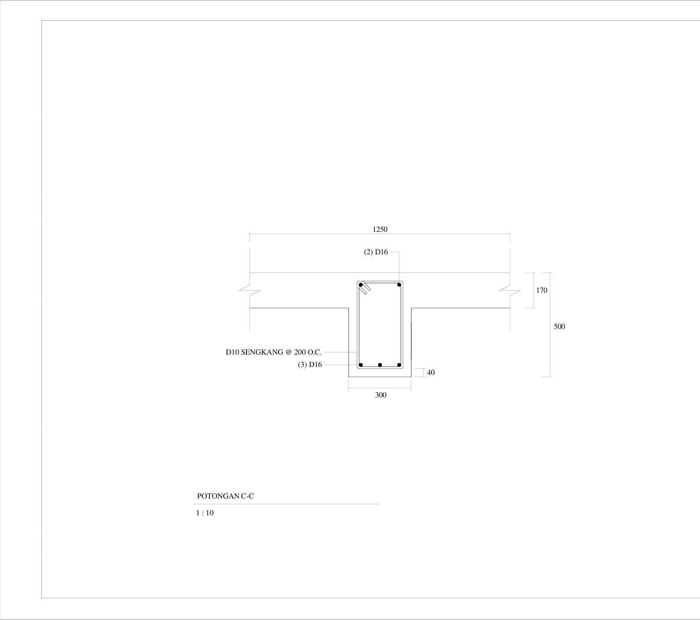
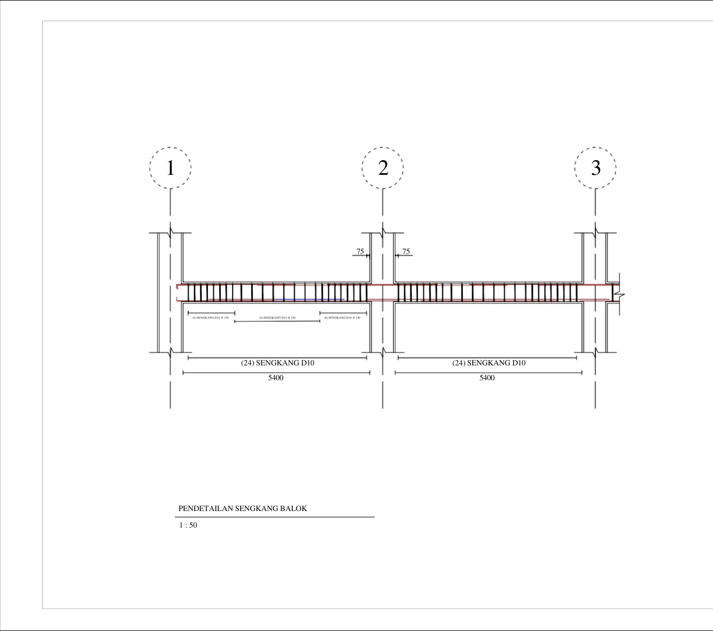
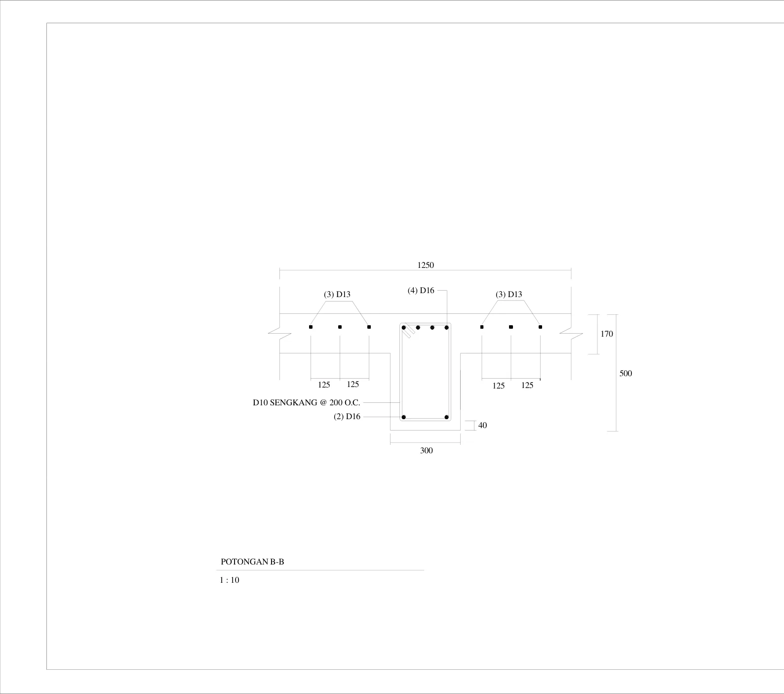
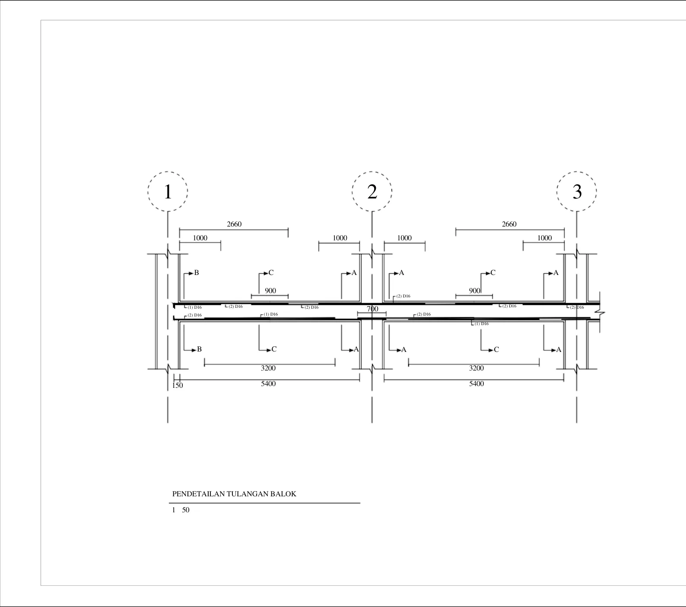
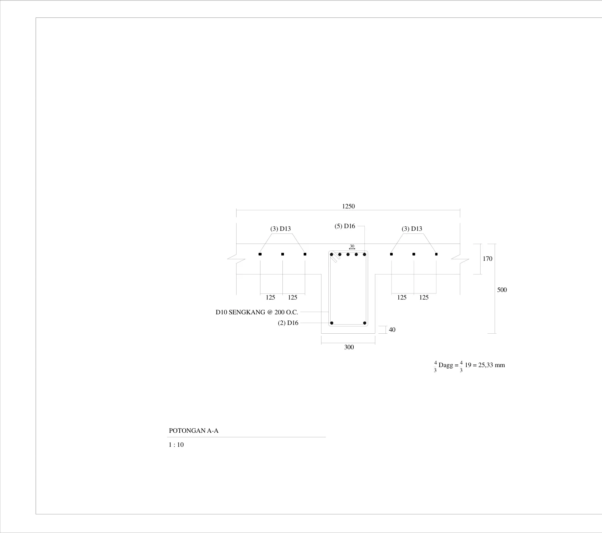

Perencanaan pelat dan balok beton bertulang
Merencanakan penulangan pelat dan balok beton bertulang, termasuk tulangan lentur, susut, dan integritas, lalu menuangkannya dalam gambar pendetailan.
- Acara atau tempat
- Project based learning Struktur Beton I, Universitas Jambi
- Tahun
- 2025
- Peran saya
- Perencana dan penggambar (tugas individu).
- Hasil
- Hitungan penulangan dan 6 lembar gambar pendetailan
- Perangkat lunak
- AutoCAD, Microsoft Excel
- Jenis
- Perhitungan, Gambar/DED
Gambar pendetailan
Contoh: pelat tebal 170 mm dengan tulangan lentur D12 @ 300 mm dan tulangan susut; tulangan integritas balok dua D16 menerus melewati kolom.










